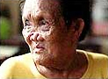
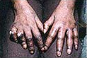

It is estimated that approximately 25% of patients who are not treated at an early stage of the disease, develop anesthesia and/or deformities of the hands and feet.
 Nose Deformities
Deformities occurring in leprosy
Face Deformities
Mask face, faces leonina, sagging face, lagophthaimos, loss of eye brows (supercilliary madorosis and eyelashes (ciliary madarosis), corneal ulcers and opacities, perforated nose, depressed nose, ear deformities, e.g. nodules on the ear and elongated lobules.
 Hands deformities
Hands Deformities
Claw hand, wrist drop, ulcers, absorption of digits, thumb – web contracture, hollowing of the interossecus spaces and swollen hand.
Read More
Feet Deformities
Planter ulcer, foot drop, inversion of the foot, clawing of the toes, absorption of the toes, collapsed foot, swollen foot and callosities.
Other Deformities
Gynecomastia and perforation of the palate. All along it has commonly been believed that it is highly contagious and incurable. Even today, in spite of scientific information available about leprosy, it is deeply rooted in the minds of most people at all levels of society, with the result that social ostracism is apparent everywhere. This has led patients to hide their early lesions, and thereby delay treatment just at the period when they could be most speedily cured. Failure to appreciate the importance of the social and psychological factors has resulted in the failure of otherwise well conceived programs.